DLS 사용 설명서¶
DLS(Data Logging System)는 차량 데이터를 녹화하고, 저장한 기록을 검사·재생하거나 NAS로 전송하는 화면입니다. 이 설명서는 EV9의 HMI-ECU에서 사용하는 DLS 화면과 버튼 사용 방법을 안내합니다.
화면의 세션 이름·용량·진행률은 설명을 위한 데모 데이터입니다. 데모 영상은 별도 bag 재생 없이 최신 DLS 화면의 버튼과 상태 변화를 촬영했습니다. 실제 운용에서는 연결된 차량·저장소의 상태를 확인합니다.
1. 화면 열기와 기본 구성¶
차량의 시작 절차를 완료한 뒤 Furive OS의 기록 화면을 엽니다. DLS는 HMI-ECU에서 자동으로 실행됩니다. 창을 닫아도 진행 중인 녹화와 전송은 계속될 수 있습니다.
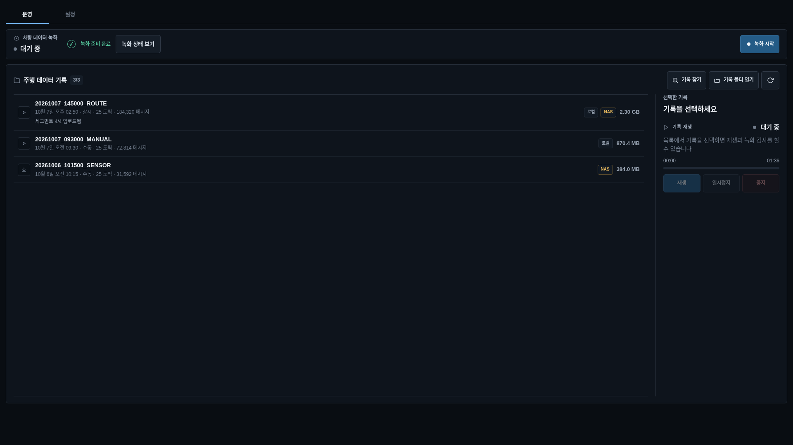
| 위치 | 기능 |
|---|---|
| 위쪽 탭 | 운영에서 녹화·기록·재생을 사용하고, 설정에서 녹화 조건과 NAS를 확인합니다. |
| 녹화 표시줄 | 대기·녹화 상태, 경과 시간과 녹화 시작·중지 버튼을 표시합니다. |
| 녹화 상태 보기 | 파일 저장, 수신 토픽, 남은 용량과 전송 상태를 확인합니다. |
| 주행 데이터 기록 | 저장된 기록의 날짜, 유형, 토픽·메시지 수, 위치와 크기를 표시합니다. |
| 오른쪽 선택 영역 | 선택한 기록을 검사·재생·전송합니다. |
처음에는 녹화 준비 완료를 확인하고, 짧게 녹화한 뒤 새 기록을 선택해 검사합니다. 다음으로 재생 또는 NAS 전송을 사용합니다.
2. 수동 녹화와 이벤트 발행¶
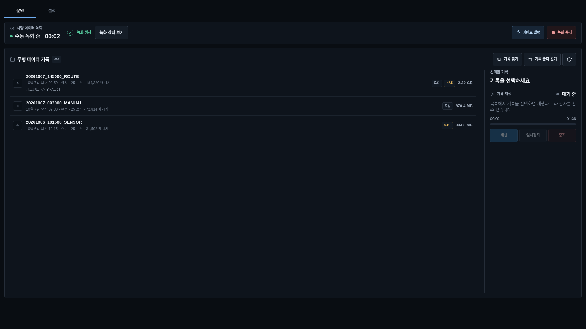
시작¶
운영탭의 녹화 상태가대기 중인지 확인합니다.녹화 시작을 한 번 누릅니다.- 상태가
수동 녹화 중으로 바뀌는지 확인합니다. 현재 기록에 새 세션 이름이 나타나는지 확인합니다.- 경과 시간이 계속 증가하는지 10초 이상 관찰합니다.
버튼이 눌렸다는 시각 효과나 요청 성공 메시지만으로 시작 완료로 판단하지 않습니다.
녹화 중 이벤트 시점을 남길 때는 이벤트 발행를 누릅니다. 이 버튼은 현재 세션에 이벤트를 기록하며 새 녹화를
시작하지 않습니다. 표시한 이벤트 구간 파일은 세션을 종료한 뒤 생성되므로, 완료 후 세션 목록과 검사 결과를
확인합니다. 녹화 중이 아닐 때는 버튼을 사용할 수 없습니다.
종료¶
- 필요한 구간이 끝나면
녹화 중지를 한 번 누릅니다. - 상태가
대기 중으로 돌아올 때까지 기다립니다. - 세션 목록을 한 번 새로고침합니다.
- 새 세션의 topic·message 수와 크기가 0이 아닌지 확인합니다.
- 세션을 선택해
녹화 검사에서 누락 토픽·빈 파일·검사 불가 항목을 확인합니다. - 자동 전송을 사용한다면 큐 등록과 전송 결과를 별도로 확인합니다.
| 결과 | 판정 | 조치 |
|---|---|---|
| 상태 대기, 새 세션과 message 존재 | 녹화 완료 | 재생 또는 전송 단계로 이동 |
| 경과 시간 정지 | 기록 이상 | 녹화를 정상 중지하고 ROS·recorder health 확인 |
| 세션 생성, message 0 | 실패 | topic·domain·type 확인 후 새 시험 세션 생성 |
| 중지 뒤 계속 녹화 중 | 종료 미완료 | 버튼 반복 대신 DLS 로그와 recorder 상태 확인 |
| 저장 공간 경고/오류 | 새 운행 금지 | 승인된 보존·전송·정리 절차 수행 |
창 닫기나 service 강제 종료는 rosbag metadata 확정을 건너뛸 수 있으므로 녹화 종료 수단으로 사용하지 않습니다.
3. 녹화 상태와 저장 공간¶
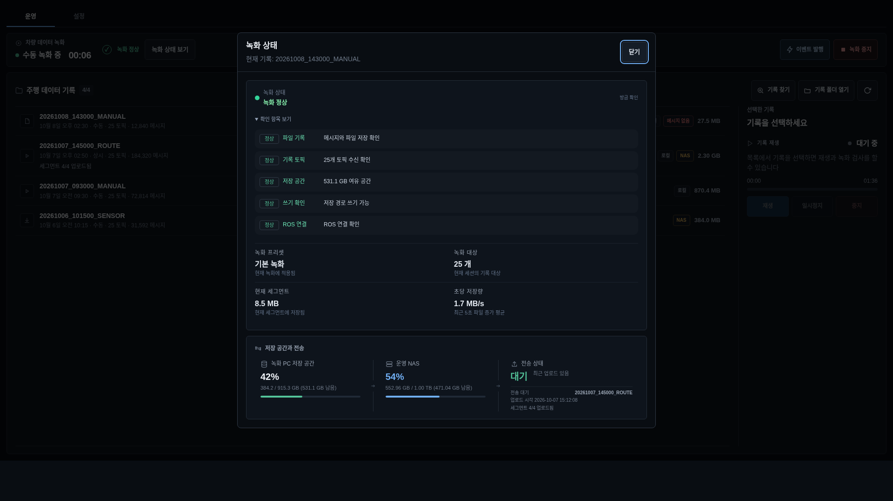
녹화 상태 보기를 누르면 상세 창이 열립니다. 위쪽에서 파일 기록·기록 토픽·쓰기·ROS 연결을 확인하고, 아래에서 녹화 프리셋, 토픽 수, 현재 세그먼트 크기와 초당 저장량을 읽습니다. 녹화 PC 저장 공간과 운영 NAS의 용량은 서로 다른 저장소입니다.
녹화 중에는 파일 크기와 경과 시간이 증가하는지 확인합니다. 연결이 끊기거나 상태 갱신이 지연되면 현재 녹화 상태를 확인할 수 없으므로 이전 정상 표시만으로 판단하지 않습니다.
4. 기록 찾기와 선택¶
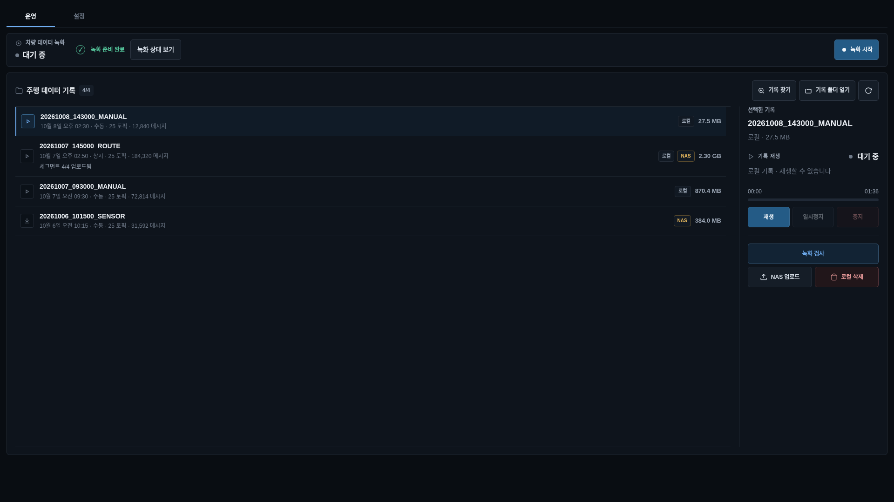
기록 찾기에서 이름·유형·위치와 정렬 조건으로 목록을 좁힐 수 있습니다. 새 세션이 보이지 않으면 녹화 상태가
대기로 돌아왔는지 확인한 뒤 새로고침을 한 번 사용합니다.
세션을 선택하면 파란 강조와 오른쪽 선택 이름이 나타납니다. 작업 직전 두 이름이 같은지 다시 확인합니다.
| 세션 위치 | 가능한 작업 | 먼저 확인 |
|---|---|---|
| 로컬 | 재생, NAS 업로드, 로컬 삭제 | message 수, 크기, 현재 재생·전송 상태 |
| 로컬 + NAS | 재생, 로컬 삭제 | NAS 대상·완료 표식·보존 정책 |
| NAS | 로컬 다운로드 | NAS 연결, 로컬 여유 공간 |
세션 폴더를 파일 탐색기에서 직접 이름 변경하거나 일부 파일만 삭제하지 않습니다. 세션 library와 metadata가 불일치할 수 있습니다.
5. 녹화 검사¶
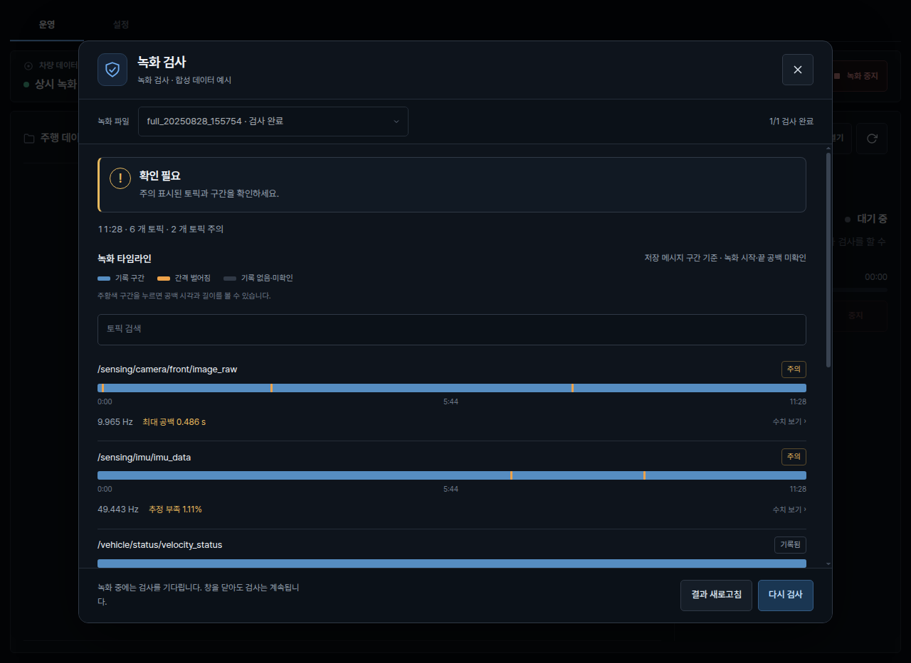
녹화 종료와 검사 완료는 별개입니다. 녹화 중에는 검사가 기다리며, 창을 닫아도 검사는 계속됩니다.
- 로컬 기록을 선택하고 녹화 검사를 누릅니다. NAS 전용 기록은 먼저 다운로드합니다.
- 녹화 파일에서 볼 파일을 선택하고
검사 대기,파일 검사 중,검사 완료상태를 확인합니다. - 상단 판정과 토픽별 기록의 타임라인을 확인합니다. 주황색 간격을 누르면 해당 시각과 길이를 볼 수 있습니다.
- Bar 아래에서 저장 Hz와 주요 이상을 확인합니다. 수치 보기를 펼치면 저장 수·자동 추정 또는 입력한 기준 Hz·추정 부족률·최장 간격을 볼 수 있습니다.
- 파일이 바뀌거나 검사에 실패했다면 다시 검사를 사용합니다. 검사 취소는 검사만 중단합니다.
검사는 SQLite 파일의 무결성, 메시지 읽기와 헤더, 녹화 당시 선택한 토픽을 확인합니다. 검사 항목 정상은 센서 값의 정확성이나 모든 데이터의 수신을 보증하는 표시가 아닙니다.
일정하게 반복되는 토픽은 파일의 메시지 간격으로 기준 Hz를 자동 추정합니다. 예를 들어 9.98 Hz 부근은 10 Hz로 정리합니다. 짧거나 불규칙한 기록은 추정을 보류하며, 직접 입력할 필요는 없습니다. 기존 검사 결과는 다시 검사하면 새 추정 방식으로 계산합니다.
검사 상세 및 설정 안의 현재 A-ECU 발행률 조회에서 현재값 조회를 누르면 현재 약 3초 동안 관측한 주파수와 publisher 정보를 볼 수 있습니다. 한 번에 최대 32개 토픽을 관측하며, 이 값은 과거 녹화 시점의 값이 아닙니다. publisher가 선언한 DDS deadline의 역수도 목표 Hz를 보장하지 않습니다.
기준 Hz 보정은 알고 있는 센서·Autoware 주기가 있을 때만 사용합니다. 빈칸은 자동 추정, 0은 이벤트 토픽입니다. 이 입력은 녹화 설정을 바꾸지 않습니다. 자동 추정은 파일 안의 반복 주기이므로 항상 절반만 저장되는 등 일정한 누락은 알아낼 수 없습니다. 추정 부족률이나 시간 공백만으로 원본 발행·전달·녹화 중 어느 단계에서 차이가 생겼는지, 또는 전송 유실이 있었는지를 확정할 수 없습니다.
업로드는 검사 결과 저장을 기다린 뒤 진행합니다. 검사 주의·실패가 업로드를 금지하지는 않습니다. 검사 중인 로컬 파일은 완료 또는 취소 후 삭제할 수 있습니다. 지원 형식·판정 기준·처리 상한은 DLS 녹화 검사 계약을 참고합니다.
6. 기록 재생¶
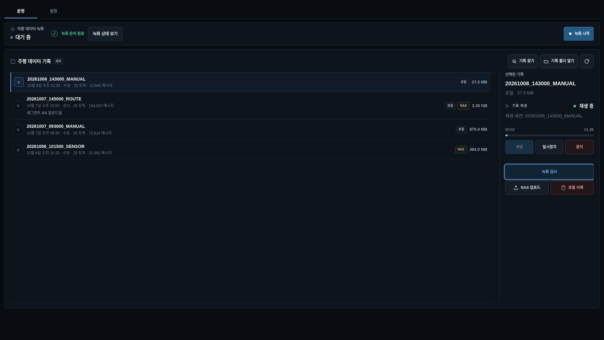
재생은 기록된 ROS 메시지를 다시 발행할 수 있습니다. 실제 운행 graph와 섞이지 않는 승인된 개발·검증 환경에서만 사용하고, 차량 운행 중에는 시작하지 않습니다.
로컬또는로컬 + NAS세션을 선택합니다.- message 수가 0보다 크고 재생 가능한 상태인지 확인합니다.
재생을 누릅니다.- 상태가
재생 중으로 바뀌고 현재 시간이 증가하는지 확인합니다. - 잠시 멈출 때는
일시정지, 이어 볼 때는재개를 사용합니다. - 다른 세션 선택이나 실차 운행 전에
중지로 끝냅니다. - 상태가
대기 중으로 돌아온 것을 확인합니다.
NAS 전용 세션은 로컬 다운로드를 완료한 뒤 재생합니다. 재생 불가: 저장된 메시지 없음이 나타나면 반복 실행하지
말고 세션의 topic·message와 복구 상태를 확인합니다.
7. NAS 업로드와 다운로드¶
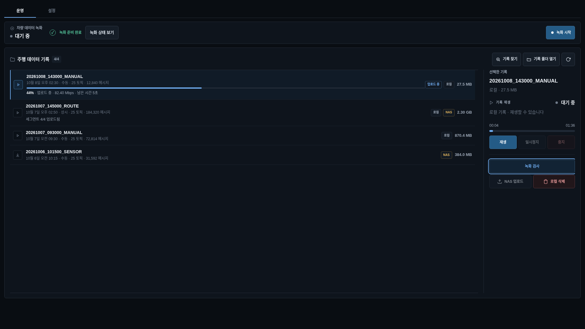
업로드¶
- 로컬 세션을 선택하고 대상 이름·크기를 확인합니다.
NAS 업로드를 한 번 누릅니다.업로드 요청됨과 큐 등록을 확인합니다.- 전송 상태의 대상 이름, 진행률, 속도와 남은 시간을 확인합니다.
100%, NAS 위치 badge와 최근 성공 시각을 확인합니다.
큐 등록 성공은 업로드 완료가 아닙니다. 전송 큐는 유실을 피하기 위한 at-least-once 방식이어서 응답 직후 프로세스가 종료되면 같은 작업이 다시 실행될 수 있습니다. 성공 표시는 NAS API의 성공 응답이며 DLS가 원격 파일을 다시 내려받아 checksum까지 독립 검증했다는 뜻은 아닙니다.
다운로드¶
NAS 전용 세션에서 로컬 다운로드를 누르고 진행률과 로컬 여유 공간을 확인합니다. 완료 뒤 위치가
로컬 + NAS로 바뀌고 재생 버튼이 활성화되는지 확인합니다.
로컬 삭제¶
로컬 삭제는 확인창 뒤 차량 사본을 지우는 파괴적 작업입니다.
- NAS 대상 host·port·폴더와 완료 표식을 확인합니다.
- 녹화·재생·업로드·다운로드 중인 세션은 삭제하지 않습니다.
- 실패, 대기, 진행 중 또는 성공 표식이 없는 세션은 삭제하지 않습니다.
업로드 후 삭제는 기본적으로 끄고 승인된 보존 정책에서만 사용합니다.
디스크 사용률이 높을 때도 파일 탐색기에서 임의 삭제하지 않습니다. DLS 보존 정책은 대상 NAS에 결속된 성공 표식이 있는 완료 세션만 정리 근거로 사용합니다.
8. 녹화할 데이터와 자동 녹화 설정¶
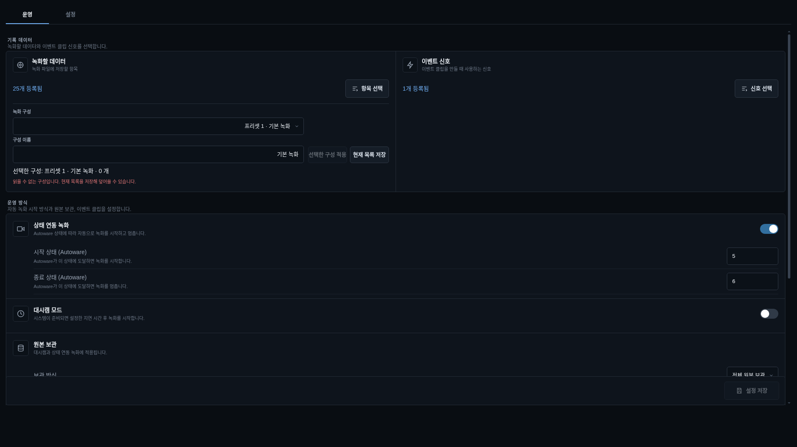
녹화 구성에서 기본 녹화·상세 녹화·직접 구성을 선택합니다. 선택한 구성 적용은 현재 녹화할 목록을 바꾸고, 현재 목록 저장은 선택한 구성의 템플릿을 저장합니다. 두 버튼의 용도가 다릅니다. 녹화 중에는 구성을 변경하지 않습니다. 적용 뒤 현재 목록과 적용 결과를 확인합니다.
EV9의 배포 기본 구성은 기본 녹화 25개, 상세 녹화 82개, 직접 구성 0개입니다. 기본 녹화에는 차량 상태·인지 결과·경로·제어 데이터가 포함되고, 상세 녹화에는 센서 원본 등이 추가됩니다. 사용자가 저장한 구성은 배포 기본값보다 우선합니다.
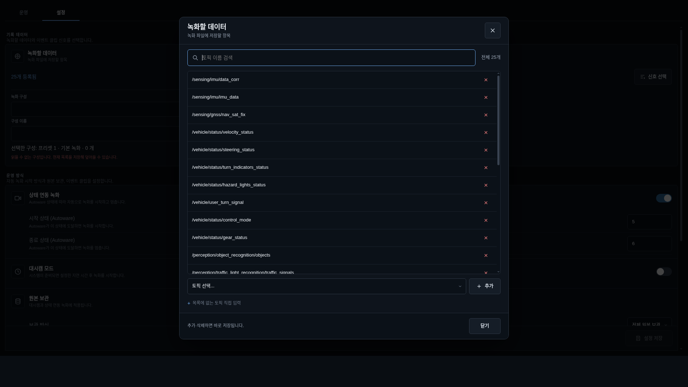
기록 topic은 rosbag에 실제 저장할 데이터이고, event trigger는 이벤트 기록을 시작시키는 신호입니다.
설정→기록 데이터에서 등록된 개수를 확인하고 항목 선택 또는 신호 선택를 누릅니다.- 열린 모달에서 이름을 검색하거나 목록을 스크롤해 전체 토픽을 확인합니다. 긴 이름은 줄바꿈으로 표시됩니다.
-
하단에서 토픽을 추가하거나 각 행의
×로 제거합니다. 변경 결과를 확인한 뒤 닫기 또는Esc로 돌아갑니다. -
목록 선택을 우선합니다.
- 직접 입력은 실제 ROS graph의 정확한 이름·type·발행 주기를 확인한 개발자만 사용합니다.
- 필수 pose·vehicle·diagnostic topic을 제거하기 전에 분석·재생 의존성을 확인합니다.
- trigger는 한 이벤트에 중복 세션을 만들지 않는지 짧은 검증으로 확인합니다.
- topic을 늘리면 디스크·CPU 부하와 개인정보 범위가 함께 커집니다.
metadata의 탑승자, 목적, 구간과 날씨는 세션 검색·분석 정보입니다. 불필요한 실명·연락처를 넣지 않고 필요한 최소 식별만 사용합니다. 설정 저장 성공과 다음 실제 세션의 metadata 반영을 각각 확인합니다.
자동 시작 방식¶
자동 방식은 운용 목적 하나에 맞춰 선택합니다.
| 방식 | 시작·종료 | 주 용도 | 확인할 결과 |
|---|---|---|---|
| 상태 연동 | Autoware 시작/종료 state | 계획된 주행 구간 | state 전환 시 세션이 정확히 한 번 시작·종료 |
| 대시캠 | 차량 부팅 뒤 설정 지연 | 부팅 후 연속 기록 | 지연 뒤 자동 시작, 수동/상태 연동과 중복 없음 |
| 전체(Full) | 선택 구간 전체 | 분석·재현 | 설정 topic이 구간 전체에 존재 |
| 이벤트 중심 | trigger 발생 전후 정책 | 이상 상황 중심 | trigger 한 번에 의도한 세션/segment만 생성 |
상태 연동과 대시캠을 동시에 활성화하지 않습니다. state 번호는 플랫폼 정책이므로 운용자가 임의로 바꾸지 않습니다. 변경 후에는 정비 환경에서 시작 조건 1회, 종료 조건 1회와 생성된 세션을 확인합니다.
이벤트 클립과 자동 전송¶
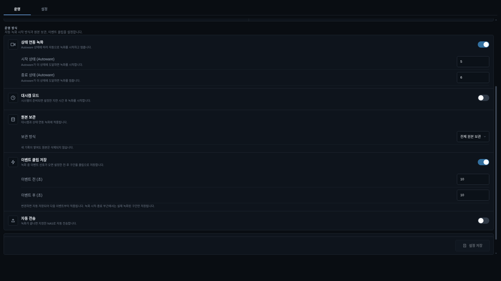
이벤트 클립 저장을 켜면 이벤트 녹화만 저장 또는 전체 녹화 + 이벤트 녹화 저장을 선택할 수 있습니다. 저장 방식은 다음 녹화부터 적용됩니다. 이벤트 전·후 시간으로 클립 구간을 설정합니다. 이벤트 전용 모드에서는 추출용 원본을 잠시 보관한 뒤 삭제하고 클립을 남깁니다. 이벤트 녹화를 끄면 전체 녹화를 저장합니다. 상세 보존·실패 동작은 DLS 저장 방식을 참고하세요. 자동 NAS 업로드는 전송 요청을 자동으로 등록하는 설정입니다. 실제 전송 완료 여부는 운영 화면에서 별도로 확인합니다.
메타데이터는 고급 설정에서 탑승자, 목적, 구간과 날씨를 입력합니다. 불필요한 실명 대신 인원 등 필요한 정보만 입력합니다.
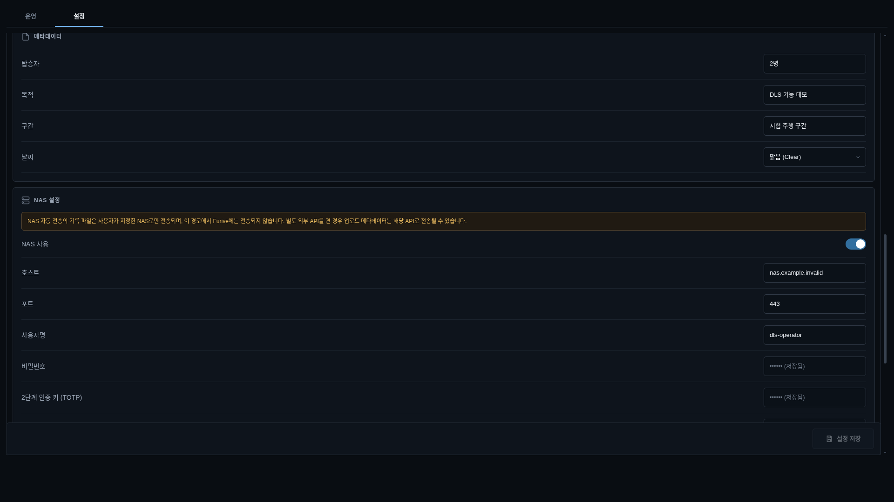
9. NAS 연결과 파일 보존 설정¶
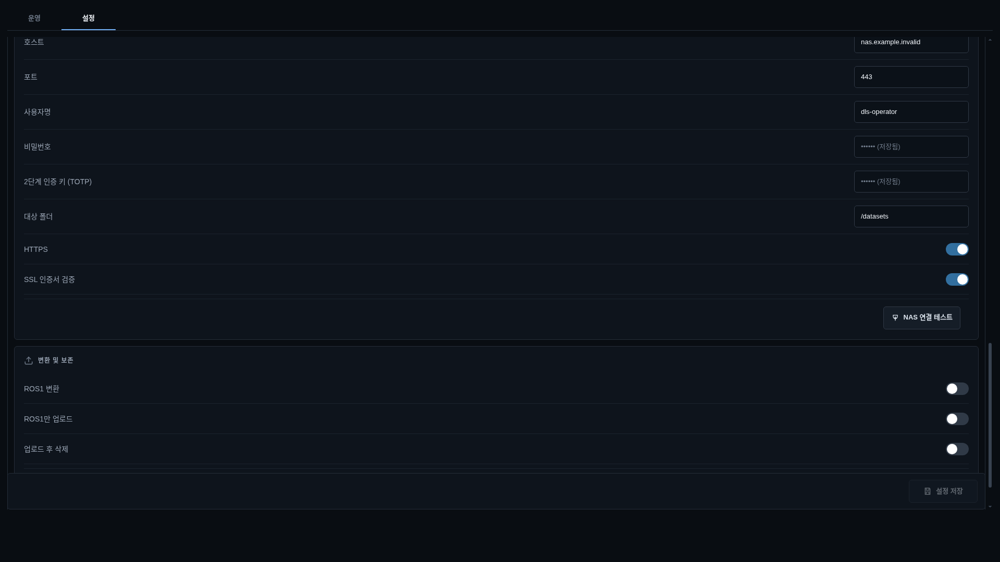
NAS를 사용하기 전에 계정, 공유 폴더, ACL, quota, DNS와 인증서가 준비되어 있어야 합니다. DLS는 NAS 자체 백업이나 원격 복구를 보증하지 않습니다.
설정→고급 설정→NAS 설정을 엽니다.- 승인된 host와 HTTPS port를 입력합니다.
- 최소 권한 사용자와
/datasets같은 절대 하위 폴더를 입력합니다. - 비밀번호 또는 승인된 인증 정보를 입력합니다.
HTTPS와SSL 인증서 검증을 모두 켭니다.- 설정을 저장합니다.
NAS 연결 테스트로 로그인과 폴더 접근을 확인합니다.- 작은 세션 하나를 업로드해 목록·진행률·완료 위치를 확인합니다.
인증서 오류를 해결하기 위해 검증을 끄거나 HTTP로 낮추지 않습니다. 사설 인증서는 승인된 신뢰 체인을 edge에
배포해 검증을 유지합니다. 화면의 nas.example.invalid와 dls-operator는 입력 형식을 보여주는 예시이며 실제
credential이 아닙니다. 비밀번호·TOTP·SID·실제 endpoint를 문서, 캡처 또는 저장소에 넣지 않습니다.
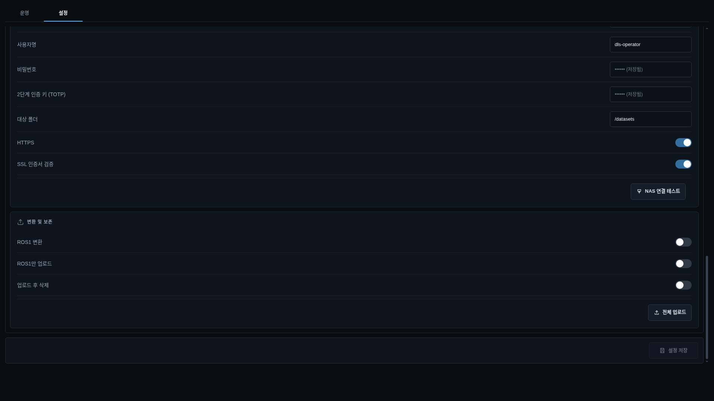
ROS1 변환, ROS1만 업로드, 업로드 후 삭제는 고급 설정의 변환 및 보존에서 확인합니다. 전체 업로드는 전송 가능한 기록을 요청하며, 완료 표식은 운영 화면에서 확인합니다. 설정값을 편집했다면 설정 저장의 결과를 확인합니다. 자동 삭제는 정해진 보존 정책에 따라 사용합니다.
10. 문제 해결¶
| 증상 | 먼저 확인 | 다음 조치 | 하지 않을 것 |
|---|---|---|---|
| Furive OS에 기록 화면 없음 | DLS package와 Dashboard 상태 | status와 service 로그 확인 | 포트 owner 강제 종료 |
| 녹화 시작 반응 없음 | 저장 공간, ROS health, 기존 recorder | 요청 결과와 DLS 로그 확인 | 버튼 연속 입력 |
| 경과 시간 정지 | recorder process, bag 파일 갱신 | 정상 중지 후 원인 조사 | 창 닫기로 종료 |
| 새 세션의 message 0 | record topic, domain, type | 설정 수정 뒤 짧은 재시험 | 정상 기록으로 반출 |
| 재생 시작 실패 | 로컬 위치, playable, message 수 | NAS 전용이면 다운로드 | 운행 중 반복 재생 |
| 업로드 대기 지속 | NAS DNS·route·인증서·계정·quota | 설정과 NAS 운영 상태 해결 | TLS 검증 끄기 |
| 진행률 정체 | 현재 파일, 속도, retry·실패 수 | 로그와 NAS 응답 확인 | 중복 업로드 연타 |
| 저장 공간 오류 | 완료 세션의 NAS 성공 표식 | 승인된 보존 절차 수행 | 파일 탐색기 임의 삭제 |
재시작이 필요한 경우 진행 중 작업을 모두 정리한 정비 상태에서만 수행합니다.
화면이 열리지 않거나 상태가 갱신되지 않을 때는 다음 명령으로 상태와 로그를 확인합니다. 진행 중인 녹화·전송을 정리한 뒤 필요한 경우에만 서비스를 다시 시작합니다.
11. 참고: 녹화 진단과 토픽 적용¶
DLS는 기본 5초 간격으로 녹화 가능 상태를 점검하고 결과를 edge heartbeat에 포함합니다.
| 항목 | 정상 기준 | 경고·오류 기준 |
|---|---|---|
| 저장 경로 | datasets 생성·접근, 쓰기·동기화·삭제 probe 성공 | 경로·권한·쓰기 실패 |
| 저장 용량 | 경고 기준보다 여유 있음 | 기본 경고: 10 GB 이하 또는 90% 이상, 오류: 2 GB 이하 또는 98% 이상 |
| ROS | node 초기화, spin thread와 최근 응답 정상 | spin 중단 또는 5초 이상 stale |
| recorder | UI 상태, thread와 소유 ros2 bag record process 일치 |
상태 불일치 또는 process 종료 |
| 파일 갱신 | 시작 유예 뒤 현재 bag 계속 갱신 | 15초 시작 유예 후 30초 이상 미갱신 |
컨테이너가 실행 중이어도 위 항목에 문제가 있으면 녹화 준비 완료가 아닙니다. 저장 공간 경고 시에는 NAS 성공 표식과 보존 정책을 확인한 세션만 승인된 절차로 정리합니다.
저장 공간 부족으로 녹화를 중단해도 DLS의 ROS·디스크 감시와 상태 조회는 계속 동작합니다. 상태 조회에 남은 저장 경로와 중단 이유를 확인하고, 공간을 확보한 뒤 녹화를 다시 시작합니다. 다른 패키지나 별도로 실행한 녹화기는 이 중단 대상에 포함되지 않습니다.
녹화 구성 적용의 범위¶
구성의 단일 정의는 패키지의 config.default.yaml에 있는 topics.record_topic_presets입니다.
각 슬롯은 id, name, topics를 가집니다. EV9의 IMU 입력은 /sensing/imu/data_corr이며,
방향지시등과 비상등 상태를 함께 기록합니다. 사용자 설정은 재설치와 업데이트에서 보존됩니다.
선택한 구성을 적용하면 필요한 typed 중앙 전달 route를 추가·복원하고 양쪽 PC에 적용한 뒤
DLS가 같은 목록을 확인합니다. 현재 목록 저장은 템플릿만 바꾸며 현재 목록과 중앙 통신은 변경하지 않습니다.
적용 대기, 부분 적용, 미확인 응답은 완료가 아닙니다. 현재 중앙 전달과 DLS 목록을 조회한 뒤 재적용 여부를 판단합니다.
개별 녹화 토픽 추가는 요청한 항목만 additive하게 보완합니다. 삭제할 때는 DLS 전용으로 확인된 route만 사용 현황과 소유 fingerprint를 확인한 뒤 회수할 수 있습니다. 공유·사용 중·확인 불가 route는 유지합니다. 빈 구성을 적용해도 기존 중앙 route는 삭제하지 않으며, 기록할 토픽을 추가하기 전에는 녹화를 시작할 수 없습니다. 일반 중앙 토픽 편집과 템플릿 저장은 반대 소유자의 설정을 직접 바꾸지 않습니다.
상세 녹화는 자원 사용량이 늘어나므로 토픽 전달과 짧은 시험 녹화 결과를 확인합니다. 패키지 설정 안내와 중앙 전달 설정 계약을 참고합니다.
12. 참고: HMI와 DLS의 연결 구조¶
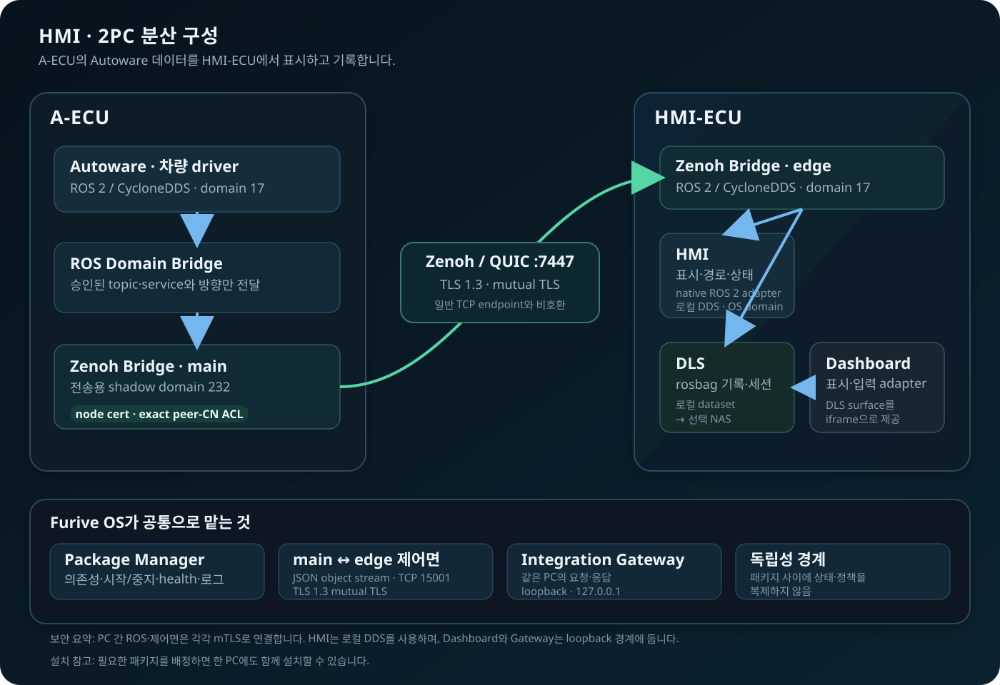
EV9은 A-ECU에서 Autoware를 실행하고, HMI-ECU에서 HMI와 DLS를 실행하는 2PC 구성입니다. DLS는 HMI와 별도로 관리되는 독립 시스템이며, 기록 앱의 격리된 iframe surface는 화면과 입력을 전달합니다. HMI 창을 닫아도 DLS 실행 상태는 Furive OS가 관리합니다.
| 경로 | 통신 | 역할 |
|---|---|---|
| A-ECU → HMI-ECU | Zenoh over QUIC/UDP :7447, TLS 1.3 mTLS |
승인된 ROS 데이터 전달 |
| A-ECU ↔ HMI-ECU | TCP :15001, TLS 1.3 mTLS |
상태·운용 요청 |
| HMI-ECU ROS → DLS | ROS 2/CycloneDDS | 선택한 토픽을 rosbag으로 기록 |
| DLS → NAS | HTTPS와 인증서 검증 | 설정한 NAS로 기록 파일 전송 |
NAS의 HTTPS 연결과 PC 사이의 mTLS 연결은 별도 연결입니다. 필요한 토픽 전달은 설치된 중앙 통신 설정을 따릅니다.
13. 참고: 화면 없이 기록 확인¶
화면을 사용할 수 없을 때는 다음 명령으로 토픽·기록·검사 결과를 확인합니다.
source checkout에서는 다른 설치본 대신 ./furive를 사용합니다.
furive topic list --active
furive topic record --list
furive topic sessions
furive topic inspect <세션> --status
녹화·중지·재생 명령은 토픽·녹화 CLI를 참고합니다.